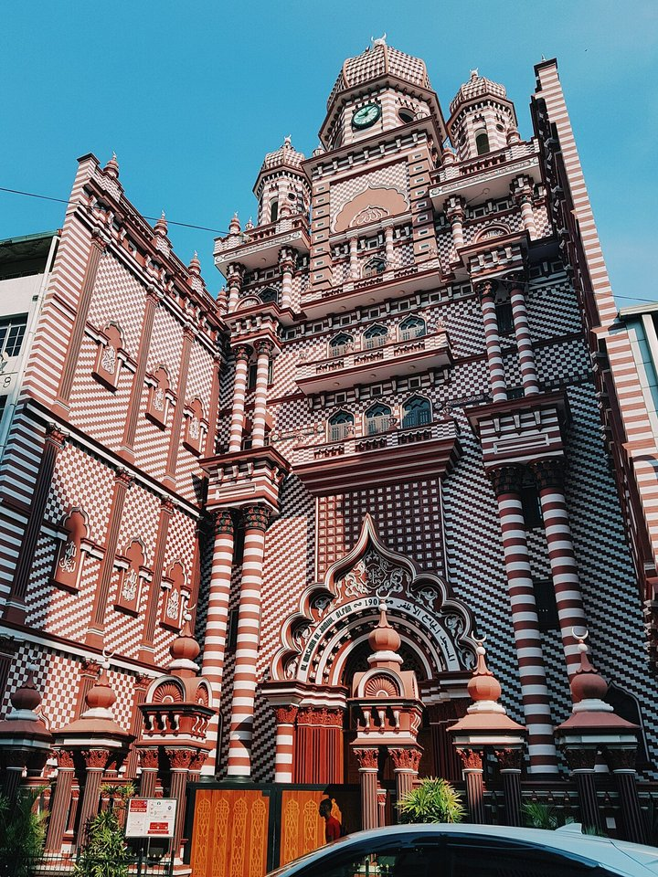
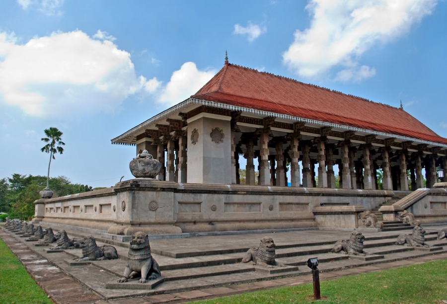
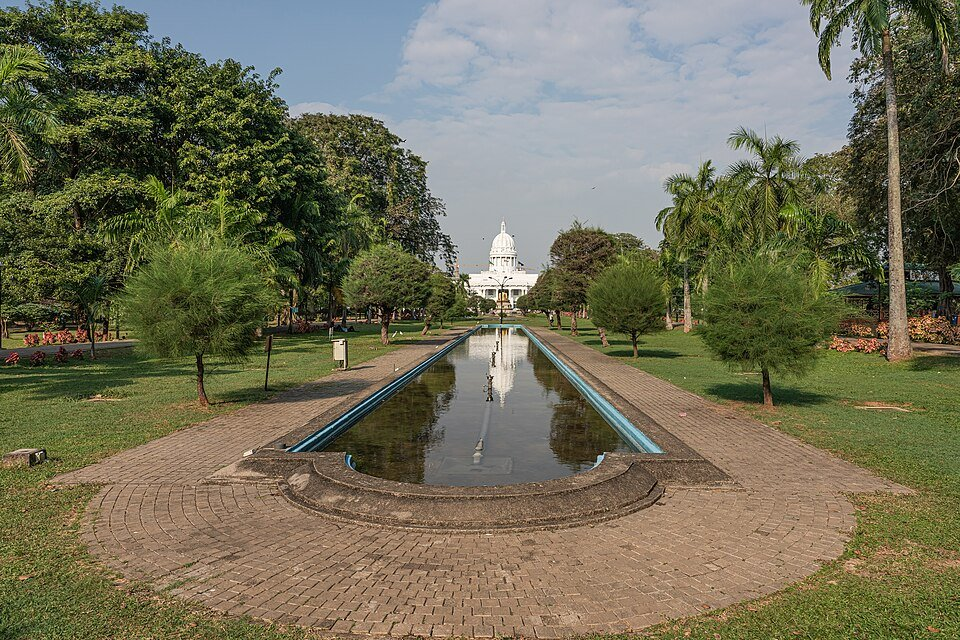
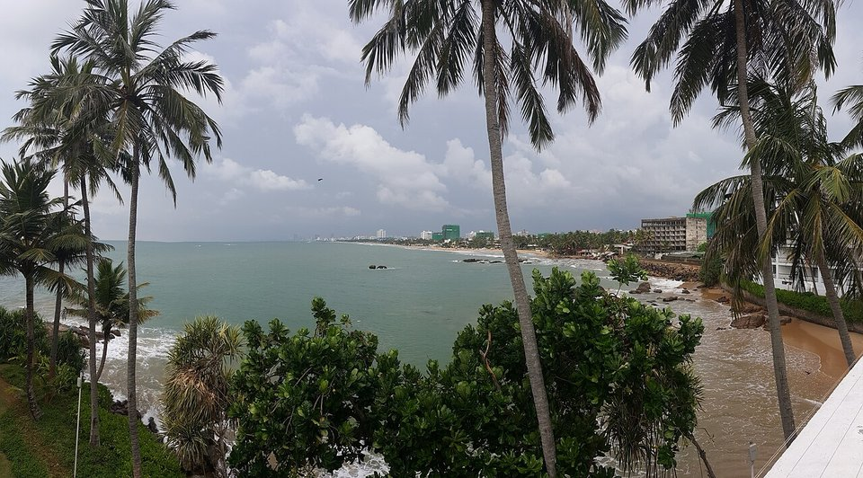
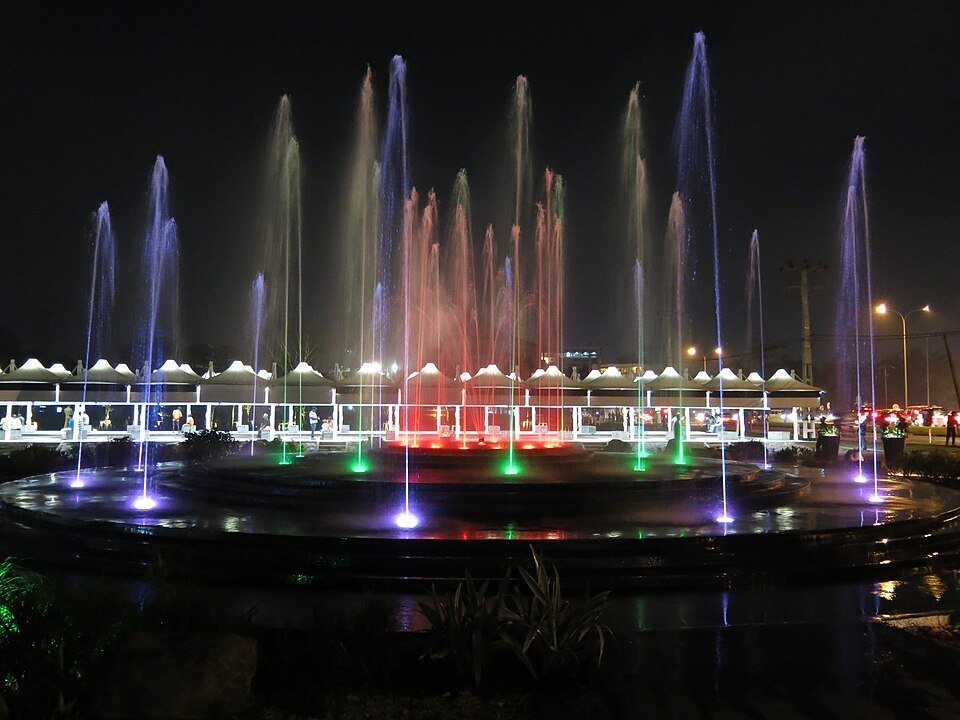
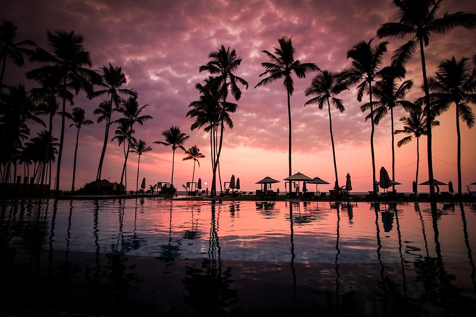
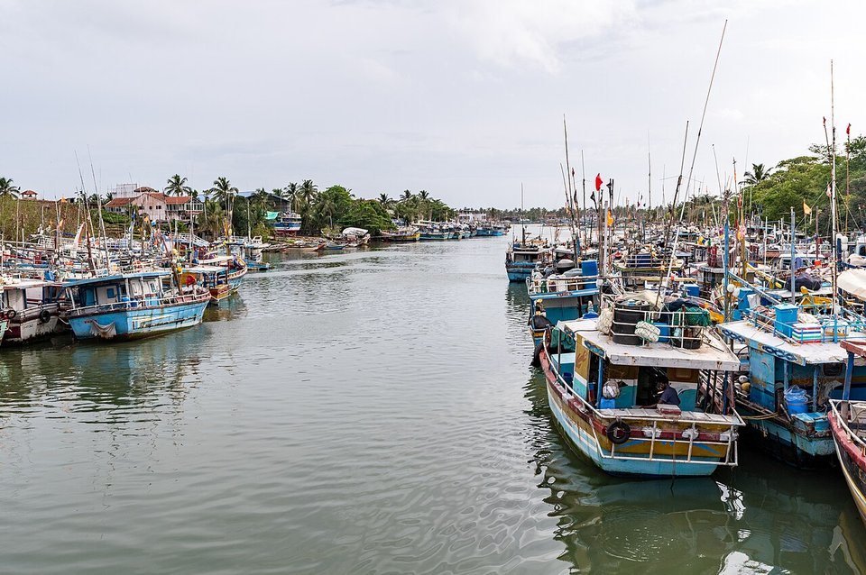

Top Destinations in Western Province
Discover the signature highlights and attractions across this province.

Historical SitesColombo Fort & Pettah Heritage Quarter
The historic colonial core and bustling bazaar district where Dutch hospital arcades meet vibrant open-air street markets and maritime towers.
 Beaches & Coastlines
Beaches & Coastlines
Galle Face Green
The iconic 500-meter oceanfront promenade where Colombo gathers for spectacular Indian Ocean sunsets, kite flying, and street food.
 Temples & Religious Sites
Temples & Religious Sites
Gangaramaya Temple & Seema Malaka
One of Colombo's most renowned Buddhist temples, featuring an eclectic museum of artifacts and Geoffrey Bawa's floating Seema Malaka pavilion on Beira Lake.

Historical SitesIndependence Memorial Hall & Arcade
The stately national monument commemorating Sri Lanka's independence in 1948, surrounded by landscaped gardens and walking avenues.

Botanical GardensViharamahadevi Park
Colombo's largest and oldest public park, featuring giant banyan trees, dancing water fountains, walking paths, and a golden Buddha statue.

Beaches & CoastlinesMount Lavinia Beach
A golden sand beach fringed by seafood restaurants and anchored by the legendary colonial Mount Lavinia Hotel built on a rocky cliff.

Lakes & ReservoirsDiyatha Uyana Water Park & Walking Trails
A picturesque lakeside park beside Diyawanna Lake featuring a floating restaurant, organic plant markets, water fountains, and paved jogging paths.

Beaches & CoastlinesNegombo Beach & Fishing Catamarans
A wide golden sand beach renowned for traditional 'oruva' outrigger sailing catamarans, beachside cafes, and dramatic ocean sunsets.

Lakes & ReservoirsNegombo Lagoon
A vast, biodiverse brackish lagoon fed by rivers and the Dutch Canal, famous for delicious lagoon crabs, boat safaris, and dense mangrove islands.
 Temples & Religious Sites
Temples & Religious Sites
Kalutara Bodhiya & Hollow Stupa
One of Sri Lanka's most venerated Buddhist pilgrimage shrines, featuring a hollow stupa with painted interior murals, located on the banks of the Kalu Ganga.